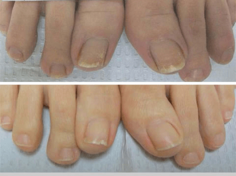

Θιβετιανές πρακτικές θεραπείας του μύκητα των νυχιών
Τα οφέλη της ιατρικής του Θιβέτ είναι ευρέως γνωστά. Οι ιατρικές ανακαλύψεις της είναι πραγματικά μοναδικές και εντελώς διαφορετικές από την τυπική ιατρική. Η σύνθεση των φαρμάκων ποικίλλει, μπορεί συχνά να εκπλαγείτε με περίεργους συνδυασμούς, επιπλέον, τα φάρμακα παρασκευάζονται πάντα από εντελώς φυσικά προϊόντα. Αυτό ισχύει επίσης για τα αντιμυκητιασικά φάρμακα. Παρά την ποικιλία των μυκητιασικών λοιμώξεων, το θιβετιανό φάρμακο αντιμετωπίζει με επιτυχία οποιοδήποτε είδος μύκητα των νυχιών.
Τύποι μύκητα νυχιών
Υπάρχουν 4 κύριοι τύποι μυκήτων νυχιών.
Υπάρχουν 4 τύποι λοίμωξης, ανάλογα με τον τύπο του μύκητα.
Η περιφερική ή περιφερική ονυχομυκητίαση είναι ο πιο κοινός τύπος μύκητα των νυχιών. Από τα άκρα της πλάκας των νυχιών, ο μύκητας διεισδύει στον πυρήνα του νυχιού, ως αποτέλεσμα του οποίου το νύχι αρχίζει να αλλάζει χρώμα, αρχίζει να σπάει και να γίνεται λεπτότερο.

Η εγγύς υπογλώσσια ονυχομυκητίαση είναι ένας σπανιότερος τύπος μύκητα νυχιών. Η μόλυνση ξεκινά στην επιδερμίδα γύρω από το νύχι και έπειτα φτάνει στον πυρήνα του νυχιού. Σε αυτήν την περίπτωση, σχηματίζονται λευκές κηλίδες και οπές σε όλο το νύχι.

Η λευκή επιφανειακή ονυχομυκητίαση εκδηλώνεται με τη μορφή λευκών κηλίδων, το σχηματισμό λωρίδων στην πλάκα των νυχιών, οι οποίες μετατοπίζονται περιφερικά καθώς μεγαλώνει το νύχι. Με την πάροδο του χρόνου, μεγαλώνουν, αυξλανινται και γίνονται κίτρινα..

Η κοινή δυστροφική ονυχομυκητίαση είναι ένας τύπος μυκητιασικής λοίμωξης που καταστρέφει ολόκληρη την πλάκα των νυχιών - το νύχι φαίνεται παχύ, αλλάζει χρώμα και σχήμα.

Θεραπεία του μύκητα των ποδιών στο Θιβέτ
Η μυκητιασική λοίμωξη είναι μια ασυνήθιστα επίμονη ασθένεια που απαιτεί μακροχρόνια και εντατική θεραπεία. Παραδοσιακές αλοιφές και κρέμες, η δράση των οποίων διαρκεί όχι περισσότερο από 10-15 λεπτά αφού απορροφηθεί πλήρως στο δέρμα, καθυστερεί τη διαδικασία θεραπείας για μήνες και δεν μπορεί καν να αφαιρέσει εντελώς τη μόλυνση. Στο Θιβέτ, πριν από πολλά χρόνια, υιοθετήθηκε μια πολύπλευρη προσέγγιση για την καταπολέμηση του μύκητα των νυχιών. Ένα σύμπλεγμα από μείγμα φαρμακευτικών φυτών, τα οποία ο ασθενής φορά συνεχώς για αρκετούς μήνες, είναι σε θέση να εξαλείψει πλήρως τη λοίμωξη.
Σήμερα, ορισμένα θιβετιανά φάρμακα διατίθενται επιτυχώς σε όλο τον κόσμο. Συμπεριλαμβανομένων αντιμυκητιασικών φαρμάκων. …. είναι ένα φυσικό παρασκεύασμα που βασίζεται σε πρακτικές του Θιβέτ κατά του μύκητα των νυχιών. Η κρέμα έχει δημιουργηθεί πλήρως σύμφωνα με μια παλιά φαρμακευτική συνταγή. Η φόρμουλα που χρησιμοποιείται από τους Θιβετιανούς μοναχούς για αιώνες, είναι η βάση της σύνθεσης της κρέμας. ….
Η ιατρική του Θιβέτ έχει αποδειχθεί κλινικά ότι καταπολεμά τον μύκητα των νυχιών έως και 5 φορές πιο αποτελεσματική από τα παραδοσιακά φαρμακευτικά προϊόντα.
Η κρέμα έχει 100% φυσική σύνθεση. Τα βασικά συστατικά της είναι:
Συμπύκνωμα Comfrey, που είναι ένα φυσικό αντιβιοτικό που καταπολεμά τον μύκητα και προάγει την ταχύτερη επούλωση των πληγών.
Εκχύλισμα Lapacho - ενισχύει το ανοσοποιητικό σύστημα, βελτιώνει την κυκλοφορία του αίματος και ανακουφίζει τη φλεγμονή.
Εκχύλισμα μανιταριού Ρέισι - προάγει τη διαδικασία επούλωσης των ιστών, επιταχύνει τη διαδικασία της αναγέννησης των κυττάρων.
Βασιλικός πολτός - μαλακώνει, καταπραΰνει το δέρμα, προάγει την επούλωση ρωγμών.
Εκχύλισμα ροδιού - ανακουφίζει γρήγορα τον κνησμό και τον πόνο.
Ευρωπαϊκό συμπύκνωμα Άσαρον - αυξάνει την ελαστικότητα του δέρματος, αποκαθιστά την ισορροπία υγρασίας των κυττάρων, μαλακώνει το δέρμα.
Ο μύκητας των νυχιών είναι μια από τις πιο αργές ασθένειες, η ανάπτυξη της οποίας συνήθως περνά σχεδόν απαρατήρητη. Ωστόσο, η παραμέληση της υγείας έχει συχνά πολύ δυσάρεστες συνέπειες. Περισσότερο από το 70% εκείνων που πάσχουν από μυκητιασική λοίμωξη και δεν δίνουν τη δέουσα προσοχή στην ασθένεια χάνουν τα νύχια τους πλήρως ή εν μέρει. Φροντίστε τον εαυτό σας και να είστε υγιείς!
Στην μάχη κατά του μύκητα των νυχιών το είναι μια από τις πιο αποτελεσματικές θεραπείες. Διαφέρει από άλλους αντιμυκητιασικά μέσα, καθώς επηρεάζει όχι μόνο τα συμπτώματα της μυκητίασης, αλλά και δύο προβληματικές περιοχές - τα πόδια και τα νύχια. Η κρέμα έχει ισχυρό αντιφλεγμονώδες αποτέλεσμα, καταπολεμά τα μικρόβια και έχει ενισχυτικό αποτέλεσμα, επιπλέον, έχει ενισχυτικό αποτέλεσμα στο ανοσοποιητικό σύστημα. Πρόσφατα, άρχισα να προτείνω μια κρέμα στους ασθενείς μου όχι μόνο για τη θεραπεία, αλλά και για την πρόληψη του μύκητα στα νύχια και τα πόδια. Και λαμβάνω ήδη θετικά σχόλια.


